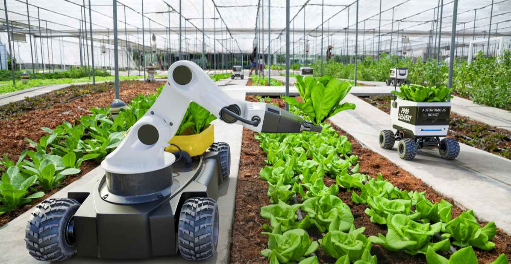
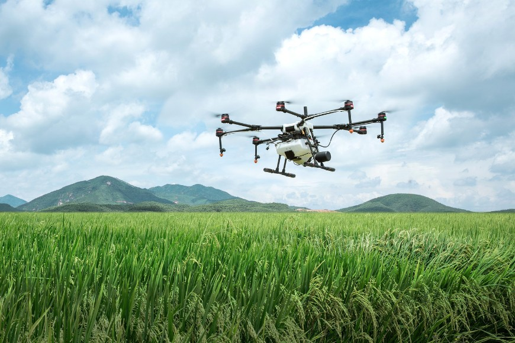

GELECEKTEKİ TARIM
Dünya nüfusu hızla artarken, tarım sektörü de giderek daha büyük bir önem kazanıyor. Bu durum, gıda üretiminin artan talebiyle birlikte, tarımın sürdürülebilirliği ve verimliliği konularında yeni zorluklar ortaya çıkarıyor. Ancak, teknolojideki hızlı ilerlemeler ve sürdürülebilir tarım uygulamalarındaki gelişmeler, tarımın geleceğini şekillendirme konusunda umut verici bir yol haritası sunuyor.
Tarımda sürdürülebilirlik, toprak, su, enerji ve biyoçeşitliliği koruma ve verimliliği artırma amacıyla önemli bir odak noktası haline gelmiştir. Geleneksel tarım yöntemleri, doğal kaynakların aşırı tüketimine ve çevresel bozulmaya yol açabilir. Ancak, modern tarım teknolojileri ve uygulamaları, bu sorunları azaltmak veya ortadan kaldırmak için çözümler sunmaktadır.
İleri tarım teknolojileri, tarımsal üretkenliği artırmak, su ve enerji kullanımını optimize etmek ve zararlı kimyasalların kullanımını azaltmak için kullanılabilir. Örneğin, hassas tarım teknikleri, bitki ihtiyaçlarına göre sulama yaparak su kullanımını azaltabilir ve verimliliği artırabilir. Benzer şekilde, entegre zarar yönetimi uygulamaları, kimyasal kullanımını azaltarak biyoçeşitliliği koruyabilir ve gıda güvenliğini artırabilir.
Ayrıca, dijital tarım ve yapay zeka gibi yeni teknolojiler, tarım verilerinin toplanması, analiz edilmesi ve optimize edilmesi konusunda büyük bir potansiyele sahiptir. Bu teknolojiler, çiftçilere daha iyi kararlar almak için gerçek zamanlı verilere erişim sağlayabilir ve tarımsal faaliyetlerin daha hassas bir şekilde yönetilmesine yardımcı olabilir. Örneğin, sensörler ve drone'lar, tarlalardaki bitki büyümesini izleyebilir ve hastalık veya zararlı böceklerin erken teşhisini sağlayabilir.
Gelecekte, tarım sektörü daha da sürdürülebilir hale gelmek için bu tür teknolojileri daha yaygın bir şekilde benimseyecektir. Ancak, bu dönüşümün başarılı olması için çeşitli engellerin üstesinden gelinmesi gerekmektedir. Bu engeller arasında, teknolojiye erişim, eğitim ve altyapı eksiklikleri, politik düzenlemeler ve ekonomik zorluklar yer almaktadır. Bu nedenle, uluslararası işbirliği ve çeşitli paydaşların katılımı, sürdürülebilir tarımın geleceğini şekillendirmede kritik bir rol oynayacaktır.
Sonuç olarak, tarımın geleceği, sürdürülebilirlik ve teknolojiyi birleştirerek yeniden şekillendirilebilir. İleri tarım uygulamaları ve dijital teknolojiler, gıda güvenliğini artırmak, çevresel etkileri azaltmak ve tarım sektörünü daha dirençli hale getirmek için güçlü araçlar sunmaktadır. Ancak, bu dönüşümün başarılı olması için politik, ekonomik ve sosyal zorlukların üstesinden gelinmesi gerekmektedir. Bu bağlamda, tarımın geleceği, sadece çiftçiler ve endüstri liderleri için değil, aynı zamanda küresel toplumun tamamı için önemli bir konudur.

PEKİ NELER OLUCAK?
Hassas Tarımda Drone Kullanımı
Bilişim teknolojilerinin tarıma uygulanması şeklinde ifade edebileceğimiz hassas tarım, drone ile tarım sektörüne katkıda bulunuyor. Milenyum çocuklarının oyuncağı olarak tabir edilen ve ilk amacı savunma sanayisinde kolaylık sağlamak olan drone’lar insanların ulaşamayacağı alanlara erişerek çiftçilerin karşılaştığı sorunlara çözüm oluyor. Arazileri havadan tarayarak uzaktan algılama yapan drone’lar sulama, ilaçlama ve haşere kontrolü için kullanılarak tarımsal faaliyetlerin daha etkin ve kısa zamanda yapılabilmesini sağlıyor.
Akıllı Tasmalar ile Çiftlik Hayvanlarının Kontrolü
GPS, RFID ve akıllı tasmaların da tarım sektörünün geleceği olduğu anlaşılıyor. Öyle ki ineğin günlük geviş getirme oranlarını raporlayarak süt verimliliğinin yüzde 15 artırabilmesini sağlayan akıllı tasma gibi otomasyon sistemleri yatırımları hız kazanıyor. Çiftlik hayvanlarına ilişkin hayati bilgilerin izlenebilmesini sağlayan bu sistemler hayvancılık alanında önemli avantajlar sağlama potansiyeliyle sektör paydaşlarının dikkatini çekiyor.
Hava ve Toprak Sensörleri
Elektriksel dirence dayalı olarak toprak nemini ölçen toprak nem sensörü; hava, toprak ve su sıcaklık ölçümlerinde kullanılan toprak sıcaklık sensörü ve yaprağın yüzey nemliliğini sınıflandıran yaprak nemlilik sensörünün kullanımı son dönemlerde yaygınlaşıyor. Sensörler çiftlik, orman ya da su kaynaklarının durumunu gerçek zamanlı olarak takip edebilmeyi mümkün kılıyor. Nesnelerin interneti teknolojisinden faydalanılan sistemle veriler anlamlı hale getirilebiliyor. Bu sayede işgücünden su ve elektrikten tasarruf etmek mümkün oluyor.
Tarımsal Mobil Uygulamalar
Hava durumunu öğrenmeyi, ürün miktarını hesaplamayı, ilaç miktarını belirlemeyi sağlayan mobil uygulamalar günlük tarımsal işlerde önemli avantajlar sağlıyor ve tarım sektörüne ivme kazandırıyor. Gıda, Tarım ve Hayvancılık Bakanlığı’nın ve özel şirketlerin dijital tarım kapsamında geliştirilen mobil uygulamalar da bulunuyor.
Laboratuvar Ortamında Üretilen Et
Kırmızı et üretimi ve ithalatı azalıyor. Kültürlenmiş et olarak da bilinen laboratuvar eti projesi, bu durumun çözümü olarak görülüyor. Dünyada ABD, Hollanda ve İsrail'in öncülük ettiği kültürlenmiş et üretimi Türkiye’deki şirketlerin de ilgi odağında bulunuyor. Yapılan araştırmalara göre yapay etin, zararlı sera gazlarının atmosfere salınımını ve arazi kullanımını azaltma potansiyeli bulunuyor. Laboratuvar ortamında üretilen et, otoritelere göre dünyada tarımın geleceği için umut vaat ediyor.
Akıllı Tarım Otomasyon Çözümleri
Doğa olaylarına yönelik erken ikaz sistemleri ve tarım otomasyon sistemleri sayesinde tarımda verimlilik ve ürün kalitesi artıyor, üretim maliyetleri düşürülüyor. Kuyu, pompa ve depo otomasyon sistemleri, zirai don erken uyarı sistemleri, sulama sistemleri otomasyonu, iklim kontrol otomasyonu, bahçe ve sera otomasyonu ve gübreleme otomasyonu gibi otomasyonlar üretim kalitesinde ve verimlilikte etkili oluyor.